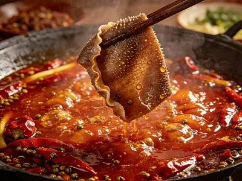
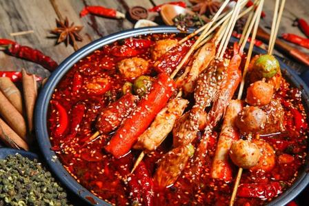
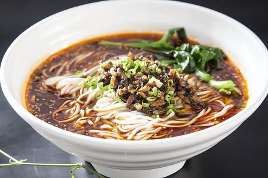

舌尖上的麻辣鲜香

四川火锅
成都的灵魂美食。红油翻滚的牛油锅底，配上毛肚、鸭肠、黄喉，蘸着香油蒜泥碟，麻辣鲜香，让人欲罢不能。

串串香
火锅的另一种表现形式，各种食材穿在竹签上，想吃什么拿什么，按签子结账，充满市井烟火气。

担担面
成都传统面食，面条细薄，卤汁酥香，咸鲜微辣，香气扑鼻。因早年由挑夫挑在扁担上叫卖而得名。

成都的灵魂美食。红油翻滚的牛油锅底，配上毛肚、鸭肠、黄喉，蘸着香油蒜泥碟，麻辣鲜香，让人欲罢不能。

火锅的另一种表现形式，各种食材穿在竹签上，想吃什么拿什么，按签子结账，充满市井烟火气。

成都传统面食，面条细薄，卤汁酥香，咸鲜微辣，香气扑鼻。因早年由挑夫挑在扁担上叫卖而得名。